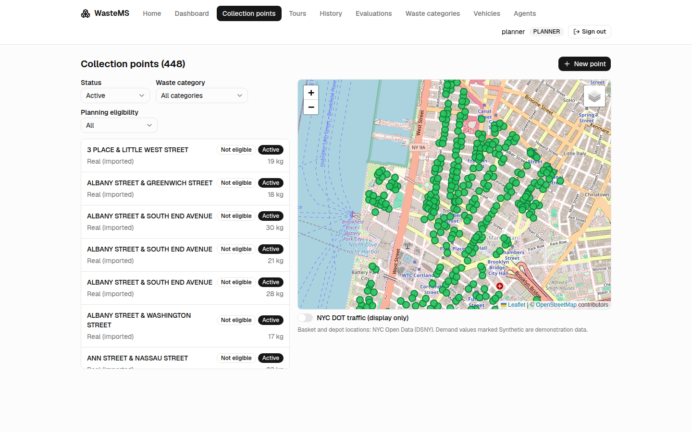

WasteMS — Intelligent Waste Management (NYC MN01)
Advanced Software Engineering course project — individual (D-005)
Author: anasdeyra
Java 21 + Spring Boot 3 · React 19 + Vite + TypeScript · Leaflet maps · embedded GraphHopper · H2
Use ← → (or click the sides of the slide) to navigate; Home / End jump to the first / last slide. Click any diagram or screenshot to open it full screen: scroll to zoom, drag to pan, Esc to close.
Agenda
- Part 1 — Problem analysis: context, users, requirements, research question
- Part 2 — Literature review
- Part 3 — UML modelling
- Part 4 — Prototype: architecture, maps, tour optimization, execution, demo
- Part 5 — Scrum: backlog, sprints, an AI-agent sprint model, retrospectives
- Part 6 — Metrology: code metrics, experiment, research answer, threats
- Conclusion: limitations and future work
Context and users
Waste collection coordinates scattered collection points, a limited fleet, available agents and different waste categories. Poorly planned tours waste travel and capacity.
Case study: Lower Manhattan, DSNY district MN01, with real basket coordinates and the real MN01G depot from NYC Open Data. Demand and operations are synthetic and labelled as such.
Straight-line routes hide one-way streets, so tours follow a directed OpenStreetMap road graph.
| Role | What they do |
|---|---|
| ADMIN | Accounts, roles, waste categories, audit log |
| PLANNER | Points, vehicles, agents, tours, optimizer, corrections |
| AGENT | Sees assigned tours, records stop outcomes |
| Organization | Benefits from better resource use |
| Course reviewer | Runs the demo, checks baseline versus optimized |
Requirements: 30 functional, 12 non-functional
| Group | FRs |
|---|---|
| Access and administration | FR-01 to FR-03 |
| Collection points | FR-04 to FR-06 |
| Vehicles and agents | FR-07 to FR-10 |
| Tours and execution | FR-11 to FR-14 |
| Intelligent tour optimization | FR-15 to FR-18 |
| Impact measurement | FR-19 to FR-21 |
| Maps and real-city data | FR-22 to FR-26 |
| User administration, support | FR-27 to FR-30 |
- NFR-01 security: hashed passwords, server-side authorization
- NFR-06 explainability: inputs, order and indicators visible
- NFR-07 fair evaluation: same data and formulas for every method
- NFR-09 reproducibility: commands, snapshots, versions recorded
- NFR-12 provenance: real, imported and synthetic data distinguishable
Problem statement and research question
Design and implement a coherent, map-centric waste-management prototype for a real Lower Manhattan case study. It must manage collection points, vehicles, agents, tours and waste, compute road-following tours, integrate an intelligent tour-optimization module, and evaluate it reproducibly, without presenting synthetic operations or partial traffic coverage as measured reality.
To what extent does integrating an intelligent tour-optimization module reduce total road-network travel distance and estimated collection duration compared with a documented baseline, while satisfying the same vehicle-capacity and collection-service constraints?
Supporting measures: execution time, scenario count and size, percentage change against the baseline, constraint violations (must be zero), identical coverage.
Literature review: approach
- Focused narrative review tied to the research question, 10 peer-reviewed sources (papers, a classic book chapter and domain reviews), with DOIs.
- Four purposes: routing models and optimality limits; nearest-neighbor construction and 2-opt; capacity, service time and duration; waste-collection evaluation practice and reproducibility.
- The model is a directed (asymmetric) TSP sequencing core with a capacity check; it is not a simultaneous multi-vehicle CVRP.
- Sources include Dantzig and Ramser (1959), Clarke and Wright (1964), Croes (1958), Lin (1965) and Rosenkrantz et al. (1977).
What we borrow and what stays open
Borrowed
- Demand- and capacity-aware routing; identical capacity validation for every method
- Deterministic nearest-neighbor construction, measured separately
- Deterministic 2-opt on top; results labelled heuristic
- Explicit single-vehicle model; excluded real-world constraints are stated
Supported after measurement
- NN + 2-opt versus input order on the specified seeded MN01 scenarios, with measured cost
Unsupported
- Global optimality or state of the art
- Generalization to other cities or real DSNY operations
- Superiority over exact solvers or metaheuristics
- Live-traffic or IoT benefits
Use cases

25 use cases traced to 39 stories — docs/03-uml/01-use-cases.md
Operational class model and OCL

OCL constraint (docs/03-uml/02-class-diagram.md §4)
context DemandEntry inv PositiveDemand: quantityKg > 0
Further invariants cover coordinates, crew and capacity, stop order and lifecycle operations.
Optimization sequence and tour lifecycle

Three-method evaluation and explicit acceptance

Tour lifecycle: draft, planned, in progress, terminal
Architecture

- Layers: web, service, domain, repository, with DTOs as Java records.
- Embedded GraphHopper: routing runs in-process on a versioned OSM extract.
- Isolated
optimization/: pure Java, depends onjava.*only.
Technology stack and data
- Backend: Java 21, Spring Boot 3, Spring Security (session and CSRF), JPA, H2 file database, Maven
- Frontend: React 19, Vite, TypeScript strict, Tailwind v4, shadcn/ui, TanStack Query, React Leaflet
- Routing: GraphHopper 11.1 embedded, car profile, versioned OSM snapshot
osm-mn01-e1f2fabaa937 - Traffic: NYC DOT speeds as a timestamped display-only overlay
| Real | Synthetic |
|---|---|
| 449 MN01 basket locations and the MN01G garage, with source ids | Demand quantities, extra categories, demo vehicles, agents and accounts, demo tours and outcomes |
Attribution: NYC Open Data (DSNY, NYC DOT) and © OpenStreetMap contributors stay visible in the UI.
Collection points on the real map

Real DSNY baskets on an OpenStreetMap basemap; list and map stay synchronized
Three-method route evaluation

Demo draft tour of 8 baskets, directed road distance:
- Input order: 11.74 km
- Nearest neighbor: 10.21 km
- NN + 2-opt: 7.47 km
The planner compares the routes and accepts the proposal or keeps the input order; nothing changes silently.
Crew execution

- Agents see only their assigned tours (driver or collector).
- The map colours stops by state: pending, collected, not collected.
- Outcomes carry quantities per waste category and an incident reason.
- Planners can correct outcomes afterwards; the previous values stay visible and audited.
Dashboard, evaluations, audit

Operations dashboard

Evaluation explorer

Audit log
Also implemented: CSV import and export of evaluation data, the seeded experiment runner and the display-only NYC DOT traffic layer.
Demo script
Start: cd backend && ./mvnw spring-boot:run and cd frontend && npm run dev; accounts planner, agent, admin (README §4.6).
- Sign in as
planner, open Tours: four demo tours, one per state. - Open the draft, Route evaluation: compare the three routes, accept the NN + 2-opt proposal, confirm as planned.
- Open the in-progress tour: stops coloured by state, execution progress.
- Sign in as
agent: My tours; open the planned tour, start it, record outcomes, complete it. - As
planner, correct a not-collected stop; cancel a planned tour with a reason. - Open History and filter by status; open the Dashboard and follow a count to the filtered list.
- As
admin, open the Audit log and filter by action. - As
admin, run an experiment in Evaluations, export the CSV, import the scenarios again. - Switch on the NYC DOT traffic layer: display only, routes do not change.
Product Backlog
39 user stories in 8 epics, prioritised with acceptance criteria and traceability to requirements.
| Priority | Stories |
|---|---|
| P0 | 13 |
| P1 | 17 |
| P2 | 9 |
US-23 — Compare route geometry and indicators (P1)
As a planner, I want to compare baseline, nearest-neighbor and optimized routes and indicators so that I can understand where the measured improvement comes from.
- Distinct map layers for ordered stops and road geometry
- Synchronized table: order, distance, duration, execution time, checks
- Changes computed on the same scenario with the same formulas
- Attribution visible; traffic is not an optimizer cost
Sprints S1 to S10
| Sprint | Theme | Stories |
|---|---|---|
| S1 | Secure foundation: identities, roles, waste categories | US-01 to US-07 |
| S2 | Collection points and demand on the real map | US-08 to US-12 |
| S3 | Fleet, crew and MN01 import groundwork | US-13 to US-17, US-33 groundwork |
| S4 | Tour drafts: stops, order, crew, capacity | US-18 to US-20 |
| S5 | Directed routing and the three-method optimizer | US-21, US-22 |
| S6 | Optimization review, comparison, planning gate | US-23 to US-25 |
| S7 | Agent execution loop and the complete MN01 demo | US-26 to US-29, US-33 |
| S8 | Corrections, history and auditability | US-30 to US-32, US-39 |
| S9 | Dashboards, evaluation explorer, CSV, traffic overlay | US-34 to US-38 |
| S10 | Metrics campaign and project closure | Part 6, presentation |
Sprint model for an AI agent
- Planner, executor, independent done-check (D-035): a planner refines the sprint, an executor implements it, and a separate scripted done-check verifies it.
- One conventional commit per task and one branch per sprint (D-036), merged only after the done-check passes.
- No calendar dates (D-006): sprints are ordered work packages, not time boxes.
- Every sprint ends with a review against a demo script and a retrospective with concrete process changes.
- Known deviation: the frontend was verified by build, lint and HTTP checks, not by a browser walkthrough (D-040).
Reviews and retrospectives: highlights
- S1: foreign dev servers occupied the default ports, so every sprint now uses spare ports and a scratch database.
- S5: three done-check assertions were wrong, not the code; corrections are kept next to the original script and logged.
- S6: rendering every diagram right after editing caught a real Mermaid error; assertions are counted from script output.
- S7: a rollback-only transaction trap was avoided by checking before calling services inside a transaction.
- S9: Hibernate itself converted the ENUM columns, contradicting the plan; determinism was proven by an independent re-implementation and a round-trip.
- S10: JDepend silently skipped most Java 21 classes; the tool now fails loudly instead.
Code metrics
| Metric | Value |
|---|---|
| Java main SLOC (239 files) | 11251 |
| Java test SLOC (70 files) | 10172 |
| TypeScript own SLOC (93 files) | 9308 |
| Class files / methods | 273 / 2432 |
| Cyclomatic complexity, mean / max | 2.18 / 39 |
| Methods with complexity of 10 or more | 33 of 897 |
| Mean CBO | 9.14 |
| PMD violations | 133 |
| DIT | 1 | 2 | 3 | 4 | 5 | 6 |
|---|---|---|---|---|---|---|
| Classes | 112 | 147 | 1 | 9 | 1 | 3 |
Flat hierarchy: composition over inheritance; records have DIT 2. Vendored shadcn/ui excluded. Source: docs/results/metrics, command bash tools/metrics.sh.
Hot spots and coupling
- Highest complexity:
ScenarioCsvImportService.checkRow(39),TourStop.correctOutcome(33),ExperimentSpec.of(32),DemoDataService.advance(29). - Classes in several top lists:
TourService,Tour,ScenarioCsvImportService,DemoDataService,TrafficSnapshotParser— the candidates for splitting. optimization/depends onjava.*only (Ce internal 0), enforced by a test.- JDepend finds one package cycle through
config/(config, security, service, traffic, web.dto), caused by*Propertiesclasses living beside the start-up runners. Future work. - Highest CBO:
DemoDataService(67),SecurityConfig(55),TourService(53).
Experiment design
- 60 scenarios = 3 demand profiles x 5 seeds x 4 sizes (10, 25, 50, 100 points), 3 repetitions, 3 methods: 540 rows.
- Real DSNY baskets from the MN01 snapshot (238-basket pool) with synthetic demand; real MN01G depot; capacity 10 000 kg; 600 s service per stop.
- Road graph
osm-mn01-e1f2fabaa937, GraphHopper 11.1, directed legs. - Baseline: input order (a random shuffle). Indicators: directed road distance and duration (travel time plus service).
Capacity never binds, so the three profiles give identical routes: the 60 scenarios are only 20 distinct routing instances. Paired statistics use n = 20, not 60.
Results

| Points | NN (%) | NN + 2-opt (%) |
|---|---|---|
| 10 | -37.78 | -43.89 |
| 25 | -49.04 | -53.00 |
| 50 | -66.20 | -67.72 |
| 100 | -75.78 | -76.10 |
| all | -57.20 | -60.18 |
Mean directed distance change versus input order, 60 scenarios, repetition 1. Source: docs/results/experiment-stats/summary.md.
Key finding: the research question answered
NN + 2-opt reduced the directed road distance by -60.18 % on average against the input order and the estimated duration by -10.88 %, with full coverage and no capacity violation.
- NN alone already gives -57.20 %; 2-opt adds a further -5.58 % against NN, improving 17 of 20 instances and never worse (exact Wilcoxon p = 1.53e-05); against the input order p = 1.91e-06.
- Duration changes less because 600 s of service per stop is identical for every method.
- Execution time of the sequencing step: median 0.021 ms, maximum 1.989 ms (the road matrix is not in this timer).
Bounded claim: seeded MN01 scenarios only; no optimality or generalization claim (docs/06-metrics.md §6).
Threats to validity
- Weak baseline: the input order is a random shuffle, not a real DSNY sequence, so gains over it are overstated.
- Objective versus legs: the optimizer minimizes distance while GraphHopper legs follow fastest paths; the
carprofile stands in for a truck. - Collapsed profiles: capacity never binds, so 60 scenarios are 20 distinct instances, and sizes are nested.
- Synthetic demand, one district (MN01), one depot, one vehicle, no time windows.
- Traffic is not in the costs; durations are base travel time plus service.
- Execution time covers sequencing only, not the road matrix; the first repetition shows JIT warm-up.
Limitations and future work
Limitations
- Single vehicle per tour, no reload, no time windows
- Traffic is display only; no GPS or IoT, no live rerouting
- Frontend verified by build, lint and HTTP checks, no browser tests (D-040)
- Synthetic demand and operations
Future work
- Or-opt, 3-opt or a metaheuristic; an exact solver for the optimality gap
- Multi-vehicle CVRP, truck profile, time windows
- Realistic baseline and capacity-binding demand
- Traffic-aware costs as a separate experiment
- Break the package cycle; split
TourServiceandScenarioCsvImportService
Questions
README.md— setup, run, demo walkthroughdocs/— analysis, literature review, UML, Scrum, decisions, traceabilitydocs/06-metrics.md— metrics, experiment and research answerdocs/results/— committed measured data (campaign, statistics, metric summaries)presentation/— this deck and its assets
Data: NYC Open Data (DSNY, NYC DOT). Map data © OpenStreetMap contributors.